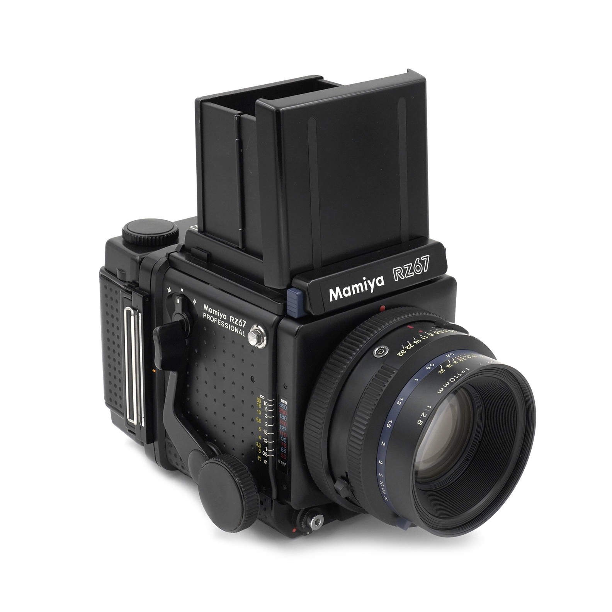

The Mamiya RZ67 is a medium format film camera that was introduced by Mamiya in 1982. It is a highly regarded
camera among professional photographers and has gained a reputation for its exceptional image quality and
versatility. Here are some key features and characteristics of the Mamiya RZ67:
- Medium Format: The RZ67 shoots on 120 and 220 roll film, which produces larger negatives compared to
35mm film. This larger format allows for higher resolution and more detailed images.
- Modular Design: The RZ67 features a modular design, allowing photographers to interchange lenses,
viewfinders, film backs, and other accessories. This modularity provides flexibility and
customization options for different shooting situations.
- Bellows Focusing: Unlike many other medium format cameras, the RZ67 has a bellows system for
focusing. This allows for precise focusing and the ability to use a wider range of lenses, including
close-up and macro photography.
- Rotating Back: The camera has a rotating back that can be easily adjusted between vertical and
horizontal orientations. This feature is particularly useful for portrait and landscape photography,
as it allows for composition flexibility without having to change the camera position.
- High Image Quality: The combination of a large film format, high-quality lenses, and precise
focusing mechanism contributes to the exceptional image quality produced by the RZ67. It is known
for its sharpness, detail, and smooth tonal rendition.
- Versatile Lens System: The RZ67 offers a wide range of interchangeable lenses, including wide-angle,
standard, telephoto, and macro options. These lenses provide photographers with flexibility to
capture various subjects and perspectives.
- Mechanical Operation: The RZ67 operates primarily with mechanical components, which means it does
not rely heavily on batteries for basic functionality. This reliability is valued by professionals
who shoot in various environments and situations.
- Film Options: The RZ67 supports both 6x7 and 6x6 formats, depending on the film back used. This
versatility allows photographers to choose the format that best suits their creative vision.
It's worth noting that the Mamiya RZ67 is a manual focus camera and requires a bit of learning and practice to
master its operation effectively. However, for photographers seeking the ultimate image quality and control in
medium format film photography, the Mamiya RZ67 has remained a popular choice over the years.